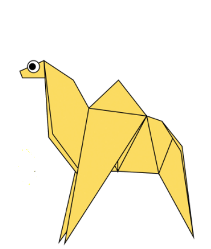
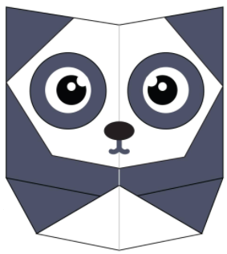
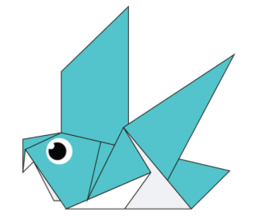
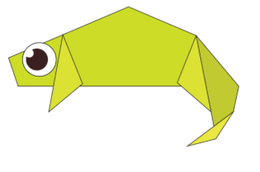
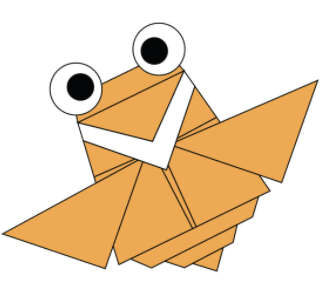
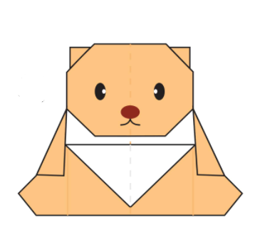

ORIGAMI DESIGNS
About Us
Follow Us
How to make origami

Camel
There are two types of camels: One humped or “dromedary” camels and two humped Bactrian camels.
Camels have three sets of eyelids and two rows of eyelashes to keep sand out of their eyes.
Camels have thick lips which let them forage for thorny plants other animals can't eat.

Panda
They have great camouflage for their environment.
Their eyes are different to normal bears.
Bamboo is critical to their diet.

Pigeon
Pigeons are incredibly complex and intelligent animals
Pigeons are renowned for their outstanding navigational abilities.
Pigeons are highly sociable animals.

Chameleon
Almost half of all known species live in Madgascar.
Their feet work like salad tongs.
They mainly change colour in order to communicate or regulate body temperature.

Flying Cicada
Cicadas can survive a huge fall as babies, or nymphs.
Females may be attracted to the sound of motors
Most have red-orange eyes.

Tedde Bear
Bears are extraordinarily intelligent animals.
Bears grieve deeply for others.
Bears have excellent senses of smell, sight and hearing.